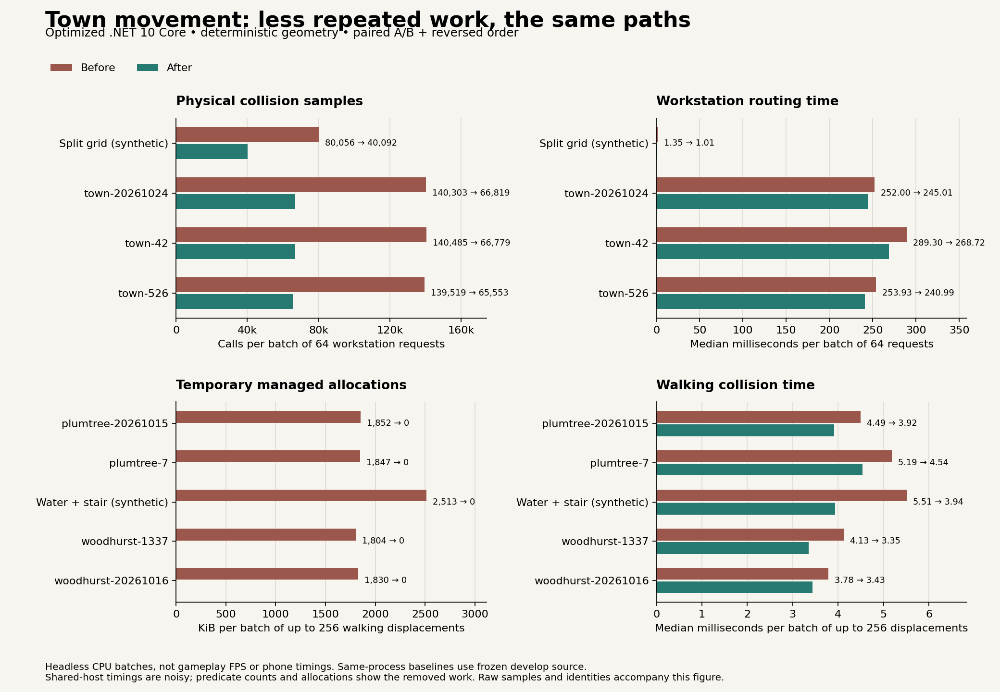

Less work between footsteps
1 November 2026
A village becomes more demanding as its people find work, return home and thread their way through narrow doors. Making that cheaper should leave their journeys intact.
This performance pass follows two small costs that happen often.
Choose an approach before checking every alternative
A worker needs to reach the actual anvil, hearth or serving place. Nearby furniture can leave enough room for their body while putting their feet outside the wider travel grid.
The router already handles that distinction. It previously swept every nearby approach for both ends of the journey before choosing one. It now considers the same approaches in the same order and checks them as they become useful. The chosen journey still gets its final physical safety check.
Stop leaving rubbish at every footfall
Walking across terraced ground checks the ground beneath the body and around its rim. Those checks also decide whether a bridge keeps feet dry, a landing enters water, or a stair connects two floors.
Some of those tiny checks created temporary objects on every stride. Direct loops now apply the same rules without those repeated allocations. The shoreline, stair heights and collision margins stay the same.

Measure the work, keep the journey
The comparison runs the original and revised movement code over identical generated towns, terraced towns and deliberate awkward cases. It checks exact route points and movement results before recording costs.
Across three generated towns, a batch of 64 journeys needed about half as many physical collision samples. In the four actual terraced-town fixtures, 256 short walks stopped creating roughly 1.8 to 1.9 million temporary managed bytes.
These are measurements of the movement systems running without the game engine. They establish less repeated work and less temporary memory; they do not establish a new frame rate on a phone. Full moving-town measurements remain the next check.